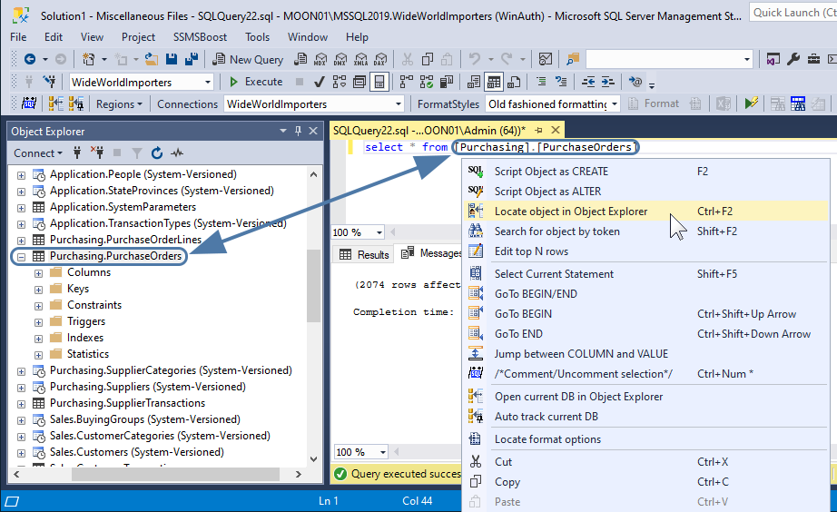

George Lemmik Case Vahend (TARpe24)
Minu lemmik Case Vahend ja mida olen kõige kauem kasutanud on SQL Server Manager Studio ehk SSMS
siin on Microsoft SQL Manageri logo:

Ajalugu:
Loodi Microsoft poolt.
Esmakordselt ilmus koos Microsoft SQL Server 2005 versiooniga (2005).
Asendas varasemad tööriistad (Enterprise Manager ja Query Analyzer).
Arendus jätkub tänaseni.
Peamised funktsioonid:
Object Explorer - andmebaaside ja objektide haldamine
Query Editor - SQL-päringute kirjutamine ja käivitamine